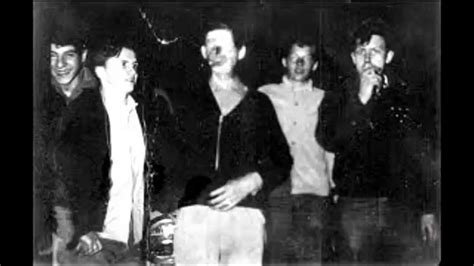

Of all the local legends in western Pennsylvania, the tale of Pittsburgh’s Green Man is the best known. This horribly deformed man, also called Charlie No-Face, could be seen at night, blowing cigarette smoke through the holes in his cheek, lurking by the roadside, trying to stay out of sight. It sounds like a classic boogie man story, except for one detail. It’s true. Well, some of it is. As the story goes, the Green Man had an accident that ruined his face. Some say he was a West Muffin man working for the power company, struck by lightning or shocked by a downed power line. Others suggest he was a factory worker splashed with acid. Whatever the cause, all agree that the accident turned his skin green and melted his facial features together. Depending on who’s telling the tale, the Green Man either died immediately (so all subsequent sightings were of his ghost) or survived and holed up in a boarded-up house.
A variant on the story gives late-night thrill-seekers a place to look for the green glow of their hero’s skin. The accident took place near one of the many abandoned railroad tunnels in greater Pittsburgh, and that’s where he ran to after his accident. Many different locations are touted as the site of Green Man’s Tunnel, but the most popular is in South Park Township, just off Snowden Road, a site used by the township for storing rock salt for warm days. So much for the stories.  Here are the facts: For fifty years, right up till the 1980s, Raymond Robinson used to walk a lonely stretch of road between Koppel and New Galilee for exercise. He did this under cover of at night because of what happened to him way back in the summer of 1919. On a dare, the 8-year-old Raymond had climbed up the pylon that held the power lines for the Harmony Line trolley in Morado. A bird had built a nest there and his buddies wanted to know if there were any eggs in it. Ray never saw the nest…or anything else again. He lost both eyes in the accident, so he never got to see the Beaver Falls newspaper headline about what happened up that pylon: “Morado Lad, 8, Shocked By Live Wire, Will Die.” But he did prove the headline writer wrong. Two months later, the Daily Times reported “In spite of all his affliction, the boy is in good humor.” After a lengthy recuperation, Ray Robinson was released, with a prosthetic nose connected to a pair of dark glasses that concealed his empty eye sockets. He passed his days listening to the radio, reading Braille, and making belts and wallets out of leather. He mowed the lawn with a manual mower. And at night, he went for walks along route 351. He was mad man. Word soon spread about the disfigured night hiker. Local teenagers began calling him Charlie No-Face; people from further afield called him the Green Man. And folk began driving to the area just to meet him. Some nights, there was such a flow of traffic to the road that the police would be there to move things along. Generally, Ray would hide when he heard traffic approaching, because of a few disrespectful types. But some curiosity seekers befriended him and he came to appreciate their company. They’d give him cigarettes and beer, and sometimes snap pictures with him. During the Vietnam War, draftees from the Pittsburgh area took these pictures with them, and so the legend of the Green Man spread across the theatre of war and back to the United States. And the stories became more exaggerated as they were retold. They are still told to this day, even though Ray Robinson died more than twenty years ago, on June 11, 1985. He is buried in Grandview Cemetery, near the site of his accident, but his legend walks on.